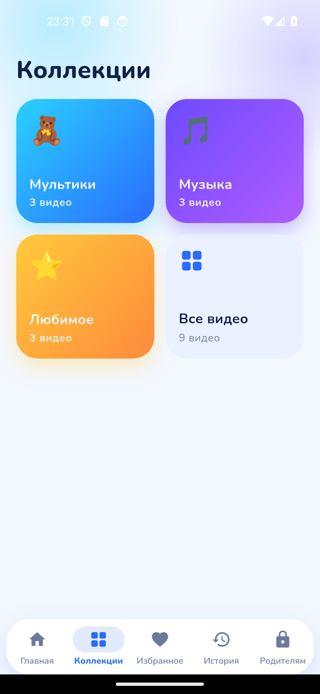
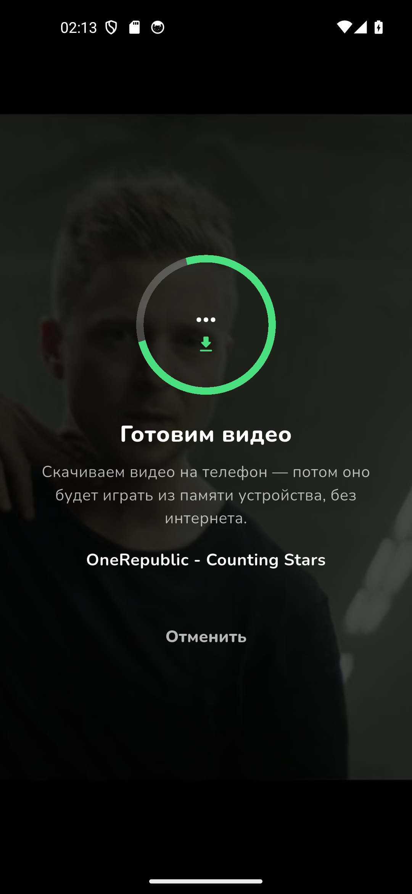
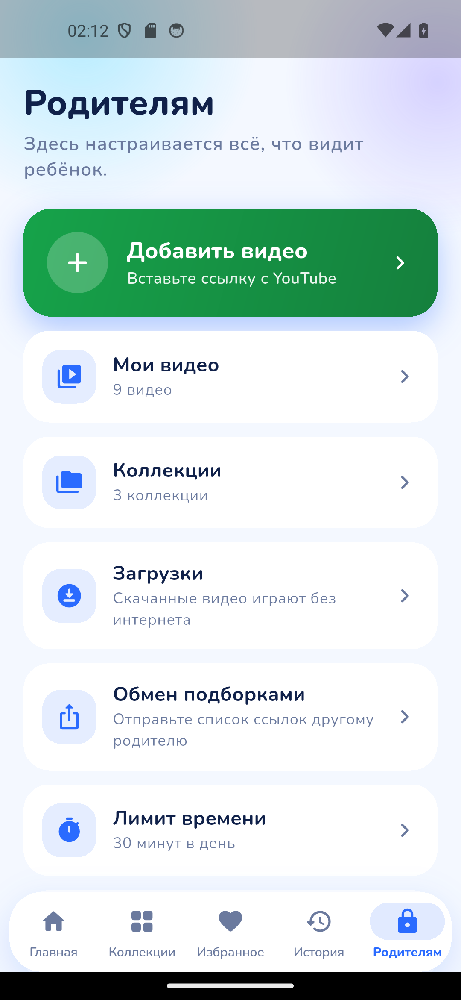

Никаких рекомендаций
В приложении нет поиска, подписок, коротких роликов и «вам может понравиться». Ребёнок видит только то, что добавили вы.
Безопасный видеоплеер для детей
В «Булаке» нет поиска, рекомендаций и бесконечной ленты. Вы сами копируете ссылки на видео, приложение скачивает их на телефон — и ребёнок смотрит ровно этот список. Даже когда интернета нет.
Уже доступно в магазинах приложений.

Почему не обычный видеосервис
После мультика видеосервис сам включает следующий, потом ещё один — и вот уже прошёл час. «Булак» устроен наоборот: список короткий, он заканчивается, и это нормально.
В приложении нет поиска, подписок, коротких роликов и «вам может понравиться». Ребёнок видит только то, что добавили вы.
Видео сохраняется в память телефона и играет с устройства. В дороге, на даче, в самолёте — одинаково.
От 15 минут до 3 часов в день. Счётчик идёт только во время просмотра, а когда время вышло — спокойный экран «На сегодня всё».
Добавить видео, скачать, удалить или поменять настройки можно только со взрослым четырёхзначным кодом.
Возможности
Спокойный плеер для ребёнка и понятные инструменты для родителя. Без лишнего.
Превью, название и длительность — как в знакомом ребёнку видеосервисе, только список заканчивается.
«Мультики», «Музыка», «Любимое» — у каждой папки свой эмодзи и цвет, чтобы ребёнок находил нужное сам.
Скачанное видео играет с телефона: просмотр не зависит от того, отдаёт ли видеосервис поток прямо сейчас.
От 15 минут до 3 часов. Время вышло — показывается добрый экран «На сегодня всё».
Четыре цифры закрывают добавление, скачивание и настройки. «Замочек» не даёт ребёнку выйти из видео или перемотать вперёд без взрослого.
Сердечко сохраняет любимое видео, а история показывает, что уже смотрели и на каком месте остановились.
Отправьте другому родителю список ссылок текстом или файлом — он вставит его у себя и получит те же видео. Передаются только ссылки, видеофайлы никуда не уходят.
Интерфейс переключается на английский — и на светлую или тёмную тему.
Как это работает
Ничего настраивать «по инструкции» не нужно: приложение само подтянет название, автора и длительность.
Скопируйте ссылку на видео и вставьте её в приложение — можно сразу несколько. «Булак» проверит ссылки и покажет, что нашёл.
Нажмите «Скачать» — файл сохранится в приватной папке приложения на устройстве. На экране загрузок видно, сколько места занято.
Дальше сеть не нужна: видео играет с телефона, и просмотр не прерывается, даже если поток видеосервиса перестал работать.
Скриншоты
Кадры с реального приложения: библиотека, коллекции, плеер и родительский раздел.





Для родителей
«Булак» не просит регистрацию и не собирает статистику. Всё, что есть в приложении, лежит на самом телефоне.
Чтобы смотреть без интернета, приложение сохраняет видеофайл на ваш телефон, в приватную папку приложения. Файл остаётся там, пока вы сами его не удалите; интернет нужен только в момент скачивания.
Ответственность за то, какие видео вы добавляете и сохраняете, и за соблюдение условий использования видеосервиса — на взрослом. «Булак» только сохраняет файл на вашем устройстве и не передаёт его никуда.
Подробности — в политике конфиденциальности. Вопросы и предложения — на info@mits.kg.
Своей рекламы мы не показываем: в приложении нет наших баннеров, вставок и «промо».
Скажем честно и про видеосервис: видео воспроизводится через его официальные механизмы, и если ролик играет встроенным плеером сервиса, рекламу может показать сам видеосервис. Наше приложение на этом ничего не зарабатывает.
Интернет нужен один раз — чтобы добавить ссылку и скачать видео на телефон. Дальше файл лежит в приватной папке приложения, и просмотр работает полностью офлайн: в машине, в самолёте, на даче.
Из видеосервиса. Взрослый копирует ссылку на видео и вставляет её в приложение — оно подтянет название, автора и длительность.
Само по себе в библиотеке не появляется ничего: ни рекомендаций, ни «популярного», ни чужого списка.
Откройте родительский раздел, введите четырёхзначный PIN и вставьте ссылки — по одной в строке, можно сразу несколько.
Приложение проверит ссылки, покажет название, автора и длительность, добавит выбранное и разложит по коллекциям. Скачать можно сразу или позже.
Да. Дневной лимит настраивается от 15 минут до 3 часов, и счётчик идёт только во время просмотра.
Когда время заканчивается, ребёнок видит спокойный экран «На сегодня всё» — без резких сообщений и без кнопки «продолжить».
Только библиотеку: крупные карточки с превью, коллекции-папки, избранное и историю. Ни поиска, ни рекомендаций, ни подписок, ни комментариев, ни коротких роликов.
В плеере — большие понятные кнопки и «замочек»: без взрослого из видео не выйти и не перемотать вперёд.
Никуда. Аккаунтов, регистрации, аналитики и трекеров в приложении нет. Список ссылок и настройки хранятся в памяти телефона, скачанные видео — в приватной папке приложения.
В сеть приложение обращается только к серверам видеосервиса — за превью и видеофайлом. Подробности описаны в политике конфиденциальности.
Ничего. Приложение бесплатное: без подписок, без встроенных покупок и без «премиум»-версии.
Android 6.0 и новее, а также iPhone и iPad на iOS 13 и новее. Интерфейс переключается между русским и английским.
Другие детские видеоприложения — это отдельная лента, где видео подбираются автоматически. «Булак» ничего не подбирает: всё, что видит ребёнок, добавили вы своими руками.
Отсюда и разница: нет бесконечной ленты, нет чужих каналов, нет рекомендаций и нет нашей рекламы. И есть дневной лимит времени с PIN-кодом.
«Булак» уже можно скачать. Если что-то не работает или есть пожелание — напишите нам, ответим лично.
вопросы и пожелания: info@mits.kg